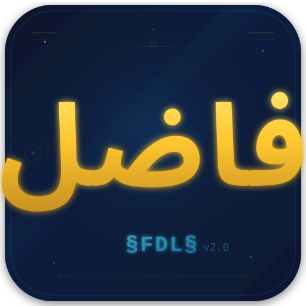

لغة برمجة عربية من الجذر والتصرف والحقل — تعمل على المعدن مباشرة. وهذه الصفحة بيئة عمل المترجم الشجري الشبكي السادس وحارسه، وكل رقم فيها مقيس.
المصدر الحاكم الوحيد: مجلد لغة فاضل محدث — والنقل الى هنا نقل بايتات مبصوم لا نسخة ثانية
ثلاثة بنود تسبق كل شيء — ختم م. فاضل عباس الجعيفري، 20 آب 2026
⛔ ممنوع اقتراح او كتابة لغة غيرنا بديلا — لا C ولا بايثون ولا اسمبلي.
والراصد وكل اداة تشخيص تكتب فاضليا ⛔ لا بلغة غيرنا.
وان عجزت فاكتب توصية وقف ⛔ ولا تكمل بلغة اخرى.
كانت هذه الصفحة تحمل محررا يشغّل الشفرة بمفسر مكتوب بجافاسكربت
(fadhil-runtime.js). وقطع وصله في 21 آب 2026 —
لا لان المترجم الخامس الغي وحده، بل لان المفسر حاكم ثان
يطبع خرجا لم تنطق به الصورة، فيصير الخرج دعوى لا شهادة.
فالصفحة تعرض وتنقل وتقيس ⛔ ولا تفسر حرفا.
اما بيئة العمل فاضل_IDE.html فحكمها غير ذلك — بامر فاضل 21 آب 2026:
يبقى مفسرها موسوما «محاكاة لا حَكَم».
فهو يعرض ما يظنه ⛔ لا ما نطقت به الصورة، والوسم ظاهر في كل تشغيل وفي شريط ثابت اسفل البيئة.
⚠ وهذا مخالف للقسم العاشر، ويقيَّد دينا معلنا ⛔ ولا يخفى.
✅ والمسموح قائم: «ويسمح بقلم يكتب بايتا امليته ولا يعرف ما يكتب». والحَكَم في الحالين واحد: الحديد — «⛔ وما لم ير على الشاشة لا يدعى»، وام البوابات تنزع كل اداة من القرص وتشغل الصورة وحدها فتنطق بنفسها.
وقل رب زدني علماًطه : 114
منقولة بالقلم من مجلد لغة فاضل محدث ببصمة SHA256 مطابقة على الطرفين.
والاعادة بامر واحد: _زامن_السادس.ps1
| الملف | صفته | بايتات المحرّر UTF-8 — صورة بشريّة |
القياس الفاضليّ ذرّات للنصّ · قطاعات للحديد |
بصمة SHA256 (16 محرفا) |
|---|---|---|---|---|
| المترجم_الشجري_الشبكي_السادس.فضل | المصدرُ الحيُّ للمترجم | 87,090 | 54,276 ذرّة 536 سطراً |
A5337036877B78E3 |
| شق_جديد.حديد | الصورةُ الجديدة — البناءُ من الصفرِ 28 أيلول | 32,768 | 64 قطاعاً | 2F7BCE69CE4F0851 |
| حارس_القوالب.فضل | حارسُ القوالبِ بلغةِ فاضل | 7,422 | 4,514 ذرّة 102 سطراً |
9027D1AEACA2E8BD |
| برنامجي.فضل | السندانُ — يُشغَّلُ فيكشفُ الأعطاب | 5,214 | 3,408 ذرّة 74 سطراً |
9EF2041E1C295DF8 |
| حارس.فضل | الحارسُ بلغةِ فاضل | 2,084 | 1,872 ذرّة 43 سطراً |
24B837A2EE84D552 |
| راصد.فضل | الراصدُ بلغةِ فاضل | 4,697 | 2,501 ذرّة 56 سطراً |
7EAF5F6190711614 |
| بيانات_متجر.ج5 | بياناتٌ بصيغةِ ج5 | 5,058 | 2,973 ذرّة 70 سطراً |
C7E8BE716D965AC2 |
نصٌّ: 111,565 بايتاً من المحرِّر · 69,544 ذرّة · حديدٌ: 32,768 بايتاً = 64 قطاعاً · الكلّ 144,333 بايتاً · قِيسَ 29 أيلول 2026 · خروقُ النقل: 0
🔒 المصدرُ والصورةُ محجوبانِ عن التنزيل — ختمُ فاضل 29 أيلول 2026. الأرقامُ والبصماتُ أعلاه توثيقٌ يُقاسُ عليه ⛔ ولا يُنزَّلُ المفسِّرُ ولا اللغة.
والبيان الكامل في بيان_السادس.json وورقة البصمات في بصمات_السادس.txt
FTF-5 = صيغة تحويل فاضل، بخمسة بتات للذرة الواحدة. هوية الحرف جُمَّله، وتمثيله الآلي مقعده في أبجد هوز من 1 الى 28 — لأنه أصغر كتابة للهوية ذاتها داخل خمسة بتات، بينما الجُمَّل يحتاج عشرة. والمستوى 1–28 محجوز للعربية حصرا والى الأبد، وكل أبجدية أجنبية تدخل خلف طابق.
وعمود «بايتات المحرّر» ليس قياسا فاضليا — هو بايتات الصورة البشريّة UTF-8 كما يكتبها المحرّر وينقلها القلم. وهو المدخل الذي يستقبله المترجم بنصّه: «المدخل — بايتات المحرر، لا FTF-5» (ورقة الطور الأول §②)، و«المصدر: بايتات المحرر UTF-8 كما يكتبها — لا ترميز مخترع» (مولّد الشق).
⛔ ولا ملف من الثمانية مكتوب بترميز FTF-5. والرأس الإلزامي
FF 05 03 8E 01 غائب عن كلها — قِيست رؤوسها بالفتح. فالسادس يُملى بالمحرّر،
وFTF-5 ترميز الداخل. ⛔ ولا استدلال سلبي يخمّن الترميز من اسم الملف،
فاللاحقة .ج5 اسم ⛔ لا شهادة ترميز.
وعمود القياس الفاضلي: للنصّ ذرّاته — وهي ما يُرمَّز
كل واحدة منها بخمسة بتات. وللحديد قطاعاته من 512 بايتا، وهي وحدة
باب after_write نفسه: «القلم يقرا … بايتا = قطاعا»، ويصرخ ان لم تكن مضاعف 512.
⛔ ولا يُعرَض هنا طول FTF-5 بالبايت: وحدتها بتّ لا بايت، وجدول علامات الترقيم
ناقص بإقرار مرجعها، والمجموعة 5 محجوزة بلا تعريف ⟹ فالرقم لو كُتب لكذب.
وعلّم آدم الاسماء كلهاالبقرة : 31
الموضع الحاكم واحد: لغة فاضل محدث\بيئة\فاضل_IDE.html
— واربع نسخ تزامَن منه ⛔ ولا تحرَّر نسخة.
كانت تصرفات اللغة وشروطها وجذورها مكتوبة داخل الملف، فتكذب كلما تحركت اللغة.
والآن يستخرجها _ولّد_التعريفات.ps1 من المصدر الحي نفسه.
الجذور والاوزان من المترجم_الشجري_الشبكي_السادس.فضل،
والتصرفات الست عشرة من القانون 9 في 03. ⛔ ولا ثالث.
البيئة تجلب تعريفات_السادس.json وتقارن بصمته بالمضمَّنة.
فان اختلفت احلّت المجلوب وقالت ذلك ⛔ ولا تصمت.
كان فيها مساران: FDL_VERSION يقرأ الخزن المحلي، وcheckForUpdate يتصل.
اسقط الاول وفُرّغ جسمه — «لا حاكمان لشيء واحد».
شريط ثابت اسفل البيئة، وسطر في الكونسول عند كل تشغيل: محاكاة لا حَكَم — والحَكَم الحديد.
قائمة «فتح مثال» وثلاثة عشر مثالا في لوحة الاوامر سقطت كلها، وعشرة الجذور
المختومة حلت محلها. واختيار جذر يفتح قالبه 01 <جذر>:1().
اربعة مواضع كانت ترصف الجذور والاوزان باليد صارت تقرأ من التعريفات.
فكان [1..12,15] ثلاثة عشر ولا فيها 14، و(حسب|طبع|شرط|صنف) اربعة.
المؤشر من اليمين دوما، والمحرر يفتح بالعنوان 01،
وكل انتر يولد الاخ الذي يليه. والعمق يضيفه المبرمج بخانة زائدة
⛔ ولا تفرض عليه.
البيئة تملأ المساكن العشرة لكل سطر وتطبق الحراسات مقروءة من
حارس_القوالب.فضل ⛔ ولا تخترع حكما. وزر «حارس القوالب»
في شريط البيئة يفتح لوحه، ويعمل مع كل تبديل في المحرر.
| المُدخَل | المنتظَر | المقيس |
|---|---|---|
| اسواق_كاظم.فضل | صمت | ✅ صفر صرخة |
| برنامج_ماسح.فضل | صمت | ✅ صفر صرخة |
| بيانات_متجر.ج5 | صمت | ✅ صفر صرخة |
| حقن المكرَّر | صرخة «مكرر» | ✅ صرخ |
| حقن اليتيم | صرخة «نسب مقطوع» | ✅ صرخ |
⛔ وهذا قياس الحارس المقروء في البيئة لا الحارس الفاضلي في المترجم —
فالدين السادس في السيرة قائم ⛔ ولا يغلق.
⟸ وعطبان أمسكهما القياس في محرك البيئة لا في الحارس: طبقت حراستا «شرط» و«ربط»
على كل سطر وهما مقيدتان بجذريهما، وصفّر تصرف لاسطر الشرط فصرخ «بلا تصرف».
فاصلح الاثنان من المصدر.
تنزيل بيئة العمل 6.6.0
ملف HTML واحد · يحتاج متصفحا فقط · والتعريفات تُجلب عند كل فتح
وما تغيّر في التعريفات بالقياس:
التصرفات كانت 13 باسماء مخالفة ومعها عمود اسقاط برمجي — وصارت
16 بنص فاضل في القانون 9 بلا عمود اسقاط (§8) ·
والموارد كانت 4 وصارت 10 ·
والعلامات كانت 11 وصارت 3 مبنية (ق4) ·
والشروط كانت 11 وفيها تكرار وصارت 12 (ق10) ·
واضيفت 5 روابط و28 حرفا بمقاعدها وجُمَّلها — والاشتقاق بصيغة FTF-5 يطابق المقروء في 28 من 28. وقياس المصالحة: صنف:14 وصنف:16 كانا يصرخان «وزن غير معروف» فصارا يصمتان، وصنف:17 وصنف:0 يصرخان وهما خارج المدى.
✅ وتعارضان سقطا في 22 آب:
عمود «المواءمة البرمجية» حُذف من جدول ق9 في 03 فصار ثلاثة اعمدة عملا بـ§8 —
والقلم يقبل الحالين. واتجاه النقاط ليس عطبا بنص فاضل:
«الكتابة العربية تصالح الحديد، والاتجاه ما مختوم في السادس».
اليس الله بكافٍ عبدهالزمر : 36
تشغل بعد كل بناء بصفر نكوص. والشواهد منقولة من سيرة المترجم الشجري الشبكي السادس §⑮-أ — الحكم على الخرج لا على البصمة.
ان الله يدافع عن الذين آمنواالحج : 38
مكتوب بلغة فاضل في الورشة: 4,517 ذرّة · 82 سطرا — ثمانية محروسين، واثنا عشر سطر فحص منفَّذ. وموضعه الورشة حتى ينفَّذ ويعبر (ق49)، فلا يدخل الدستور أمر لم ينفَّذ.
العلاقة العائلية — البوابة الاولى: آباء = 0 نسب مقطوع، ونظائر > 1 مكرر.
اكتمال القالب: جذر = 0 بلا جذر، وتصرف = 0 بلا تصرف.
⛔ منزوع 20 آب ويقيد دينا — يحتاج صورة الشرطين معا، ولم تبن (ق47).
والتصرفات ست عشرة بق9 ⛔ ولا سبع عشرة: تصرف > 16 فوق المدى.
والاوزان ليست تصرفات (ق10): الشرط 12 والربط 5، وما فوقهما فوق المدى.
الاطراف تعد بما تفصله العلامة (ق25) — والمحرم الواحد وحده: زوج ناقص نصفه.
«معاملات الربط ليست خالية ابدا» — ومعاملات = 0 يصرخ.
خانة لكل جيل من 0 الى 9، والحد 17 خانة (ق40) — وخانات > 17 فوق الحد.
وثلاثة اسس بني عليها، مختومة 20 آب:
① المعامل زوج: مسكن ثم علامة ثم ساكن (ق25) ⛔ ولا اسم عار ·
② والعلامات ثلاث: > < = (ق4) ⛔ ولا رابعة ·
③ والتكديس يستثمر: طبع:1(),() (ق1-أ).
⛔ ولا نفي في اللغة — والمسالة ليست قائمة فيها اصلا: «ليس ساكنا» ⟹ «الآباء الموجودة = 0»، و«مكرر» ⟹ «النظائر > 1». ⟸ فالصفر يقول النفي ⛔ ولا علامة تزاد.
وحكمه: يشغل على المواطن الثلاثة فيصمت على الثلاثة، ويصرخ على الحقنتين اللتين يصرخ عليهما حارس النسب الحديدي. وحين يعبر يدمج في المترجم فيصير بوابة كل سطر يدخل، واول ما يحرسه الدستور نفسه.
| المُدخَل | الخرج المنتظَر | الحال |
|---|---|---|
| اسواق_كاظم.فضل — 20 سطرا | صمت | ⛔ ينتظر العمق 2 |
| برنامج_ماسح.فضل — 3 اسطر | صمت | ⛔ ينتظر |
| بيانات_متجر.ج5 — 17 سطرا | صمت | ⛔ ينتظر |
| حقن المكرَّر | صرخة واحدة | ⛔ ينتظر |
| حقن اليتيم | صرخة واحدة | ⛔ ينتظر |
⟹ فان صمت على الثلاثة وصرخ على الحقنتين، قامت اول اداة بلغة فاضل وسقطت اداتهم من موضعها.
⛔ وحراسة الحديد الثالثة منزوعة عمدا وتقيَّد دينا: تحتاج صورة الشرطين معا (ق47) ولم تبنَ،
«⛔ فذاك نقل حكم من اللغة الى الشفرة».
منقول بنصه من CLAUDE.md §9 والسيرة §⑮. ⛔ ولا يعرض هنا رقم لم يقس.
خزن:1 · طبع:1 · حسب:1 · حسب:2شرط:1 بقطبيه وبجوابه⚠ والديون الثمانية مقيدة في السيرة §⑮-ز ⛔ ولا تحسب نجاحا.
والدين الثامن كان: «جدول اوزان بيئة العمل v5.0 هو العمود الرابع الساقط».
⟹ واغلق في 21 آب لا بتحديث الجدول بل بسقوطه:
لا اوزان تعرض في البيئة اليوم الا ما نطق به الحديد،
والمترجم الخامس وكل ما وصل به منقول الى
_ملغى_المترجم_الخامس_2026_08_21/
تاريخا ⛔ لا مرجعا.
وعلّم آدم الاسماء كلهاالبقرة : 31
م. فاضل عباس الجعيفري — مديرية اتصالات واسط — العراق
CODEC COSMIC OS — RUBIK COSMIC MATRIX